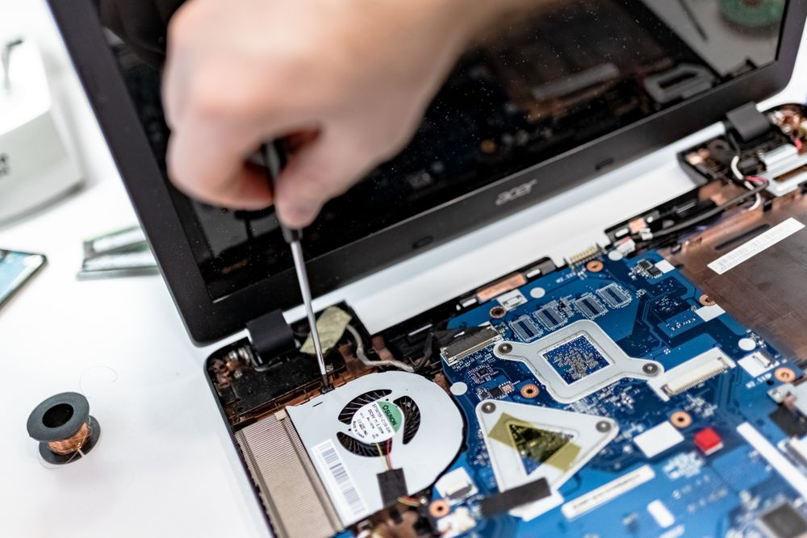
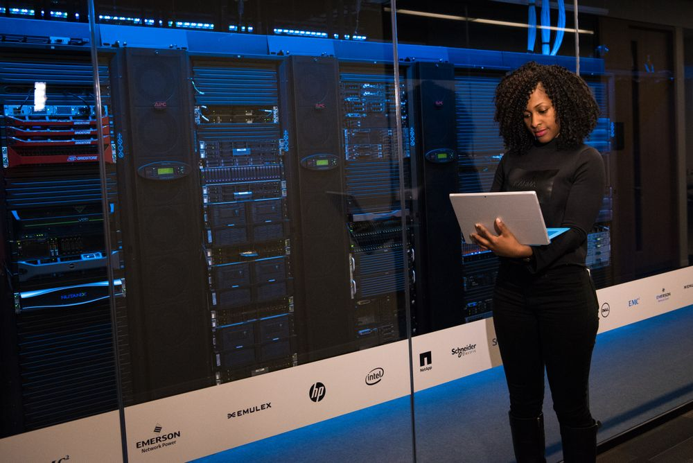

Nuestra misión
Brindar soporte técnico y consultoría de TI a empresas de Barranquilla y la Región Caribe, con soluciones ajustadas a sus necesidades de infraestructura, conectividad y gestión tecnológica.
Soporte y consultoría de TI para empresas que necesitan una infraestructura confiable, conectividad estable y acompañamiento técnico cercano.
Experiencia con tecnologías de fabricantes reconocidos
Nombres presentados únicamente como referencia tecnológica. No implican afiliación, certificación ni patrocinio.
El propósito de ITPros del Caribe parte del trabajo descrito en su portafolio: soporte técnico, consultoría e infraestructura para empresas de Barranquilla y la Región Caribe.
Brindar soporte técnico y consultoría de TI a empresas de Barranquilla y la Región Caribe, con soluciones ajustadas a sus necesidades de infraestructura, conectividad y gestión tecnológica.
Ser un aliado de confianza para las empresas de la Región Caribe, reconocido por ofrecer acompañamiento técnico responsable y soluciones de TI que evolucionan junto con su operación.
Compromisos prácticos para orientar cada diagnóstico, recomendación y trabajo acordado.
Entender el contexto antes de recomendar o intervenir.
Explicar con claridad el alcance, las alternativas y las condiciones de cada servicio.
Escuchar y acompañar a cada cliente en la modalidad de atención acordada.
Dar seguimiento a los trabajos y atender los acuerdos con seriedad.
Cuidar la información y los accesos que las empresas nos confían.
Mantener conocimientos y prácticas al día para responder a necesidades cambiantes.
Servicios informáticos para empresas: desde una asesoría puntual hasta el soporte y la gestión de infraestructura.
Asesoría y diseño de arquitecturas de red, con recomendaciones ajustadas a la operación de tu empresa.
Consultar servicio ↗Diseño, instalación, administración y mantenimiento de redes de voz y datos, cableadas e inalámbricas.
Consultar servicio ↗Atención de incidentes de equipos, sistemas y aplicaciones, según el alcance y la modalidad acordados.
Consultar servicio ↗
Mantenimiento preventivo y correctivo, gestión de activos tecnológicos y acompañamiento a proveedores.
Consultar servicio ↗Acompañamiento en servicios de red, servidores y componentes tecnológicos que soportan la operación.
Consultar servicio ↗
Apoyo en la organización del área de TI y revisión de controles técnicos e infraestructura.
Consultar servicio ↗Apoyo en auditorías internas del SGIA: revisión de evidencias, hallazgos y seguimiento de acciones correctivas conforme a ISO/IEC 42001:2023.
Consultar servicio ↗Definición de propósito, alcance, permisos, supervisión humana e indicadores para incorporar agentes de IA con seguimiento claro.
Consultar servicio ↗¿Tienes una necesidad puntual o un proyecto por etapas? Cuéntanos qué necesitas ↗
Formación certificada por CertiProf que respalda servicios de auditoría interna de sistemas de gestión de IA y gestión responsable de agentes de IA.
Certificación orientada a participar en auditorías internas de un Sistema de Gestión de IA: evaluar evidencias y controles, registrar hallazgos y contribuir al seguimiento de acciones correctivas y la mejora continua.
Certificación en planificación y supervisión de agentes de IA en organizaciones: definir propósito, alcance y permisos, establecer gobernanza y supervisión humana, y medir resultados.
Conocemos tu operación, el entorno tecnológico y el reto que quieres resolver.
Definimos un alcance técnico y una modalidad de atención acorde a tu necesidad.
Coordinamos la atención remota o en sitio y damos seguimiento al trabajo acordado.
Conversemos sobre soporte, conectividad o un proyecto para tu empresa en Barranquilla y la Región Caribe.
Describe brevemente tu necesidad y te orientamos sobre el siguiente paso.
Enviar una consulta